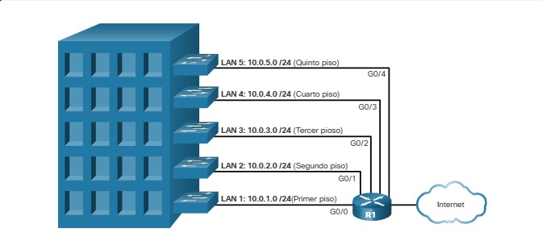

6.3.1 Porciones de red y de host
La estructura de las direcciones IP consta de una dirección de red jerárquica de 32 bits que identifica a una red y a un host dentro de una red. Al determinar la porción de red frente a la porción del host, debe mirar la secuencia de 32 bits, como se muestra en la figura.
Dirección IPv4
Los bits dentro de la porción de red de la dirección deben ser idénticos para todos los dispositivos que residen en la misma red. Los bits dentro de la porción de host de la dirección deben ser únicos para identificar un host específico dentro de una red. Si dos hosts tienen el mismo patrón de bits en la porción de red especificada de la secuencia de 32 bits, esos dos hosts residen en la misma red.
¿Pero cómo saben los hosts qué porción de los 32 bits identifica la red y qué porción identifica el host? El rol de la máscara de subred
6.3.2 La máscara de subred
Como se muestra en la figura, asignar una dirección IPv4 a un host requiere lo siguiente:
DirecciónIPv4 - Esta es la dirección IPv4 única del host.
Máscara de subred - Se usa para identificar la parte de red/host de la dirección IPv4.

Nota: Se requiere una dirección IPv4 de puerta de enlace (gateway) predeterminada para llegar a redes remotas y se requieren direcciones IPv4 del servidor DNS para traducir nombres de dominio a direcciones IPv4.
La máscara de subred IPv4 se usa para diferenciar la porción de red de la porción de host de una dirección IPv4. Cuando se asigna una dirección IPv4 a un dispositivo, la máscara de subred se usa para determinar la dirección de red del dispositivo. La dirección de red representa todos los dispositivos de la misma red.
La siguiente figura muestra la máscara de subred de 32 bits en formato decimal y binario punteado.
Máscara de subred

Observe cómo la máscara de subred es una secuencia consecutiva de bits "1" seguida de una secuencia consecutiva de bits "0".
Para identificar las porciones de red y host de una dirección IPv4, la máscara de subred se compara con la dirección IPv4 bit por bit, de izquierda a derecha como se muestra en la figura.
Asociación de una dirección IPv4 con su máscara de subred

Tenga en cuenta que la máscara de subred en realidad no contiene la porción de red o host de una dirección IPv4, solo le dice a la computadora dónde buscar la parte de la dirección IPv4 que es la porción de red y qué parte es la porción de host.
El proceso real que se usa para identificar la porción de red y la porción de host se denomina AND.
6.3.3 La longitud del prefijo
Puede ser difícil expresar direcciones de red y de host con la dirección de la máscara de subred decimal punteada. Afortunadamente, hay un método alternativo para identificar una máscara de subred, un método llamado longitud del prefijo.
La longitud del prefijo es el número de bits establecidos en 1 en la máscara de subred. Está escrito en "notación de barra", que se observa mediante una barra diagonal (/) seguida del número de bits establecidos en 1. Por lo tanto, cuente el número de bits en la máscara de subred y anteponga una barra diagonal.
Consulte la tabla para ver ejemplos. En la primera columna, se enumeran varias máscaras de subred que se pueden usar con una dirección de host. En la segunda columna, se muestra la dirección binaria de 32 bits convertida. En la última columna, se muestra la longitud de prefijo resultante.

Nota: Una dirección de red también se conoce como prefijo o prefijo de red. Por lo tanto, la longitud del prefijo es el número de bits "1" en la máscara de subred.
Al representar una dirección IPv4 utilizando una longitud de prefijo, la dirección IPv4 se escribe seguida de la longitud del prefijo sin espacios. Por ejemplo, 192.168.10.10 255.255.255.0 se escribiría como 192.168.10.10/24. Más adelante se analiza el uso de varios tipos de longitudes de prefijo. Por ahora, el foco estará en el prefijo / 24 (es decir, 255.255.255.0)
6.3.4 Determinación de la red - Lógica AND
Un AND lógico es una de las tres operaciones booleanas utilizadas en la lógica booleana o digital. Las otras dos son OR y NOT. La operación AND se usa para determinar la dirección de red.
el AND lógico es la comparación de dos bits que producen los resultados que se muestran a continuación. Observe que solo mediante 1 AND 1 se obtiene 1. Cualquier otra combinación da como resultado un 0.
Nota: En la lógica digital, 1 representa True y 0 representa False Cuando se utiliza una operación AND, ambos valores de entrada deben ser True (1) para que el resultado sea True (1).
Para identificar la dirección de red de un host IPv4, se recurre a la operación lógica AND para la dirección IPv4, bit por bit, con la máscara de subred. El uso de la operación AND entre la dirección y la máscara de subred produce la dirección de red.
Para ilustrar cómo se usa AND para descubrir una dirección de red, considere un host con dirección IPv4 192.168.10.10 y una máscara de subred de 255.255.255.0, como se muestra en la figura:

Utilizando la primera secuencia de bits como ejemplo, observe que la operación AND se realiza en el bit 1 de la dirección del host con el bit 1 de la máscara de subred. Esto resulta en un bit "1" para la dirección de red. 1 AND 1 = 1.
La operación AND entre una dirección de host IPv4 y una máscara de subred da como resultado la dirección de red IPv4 para este host. En este ejemplo, la operación AND entre la dirección host 192.168.10.10 y la máscara de subred 255.255.255.0 (/24) da como resultado la dirección de red IPv4 192.168.10.0/24. Esta es una operación IPv4 importante, ya que le dice al host a qué red pertenece.
6.3.5 Video - Direcciones de red, host y difusión
6.3.6 División en subredes de los dominios de difusión
La red 192.168.10.0/24 puede admitir 254 hosts. Las redes de mayor tamaño, como 172.16.0.0/16, admite muchas más direcciones de host (más de 65 000). Sin embargo, es posible que esto pueda crear un dominio de difusión mayor. Un problema con un dominio de difusión grande es que estos hosts pueden generar difusiones excesivas y afectar la red de manera negativa. En la Figura , LAN 1 conecta 400 usuarios, cada uno con capacidad para generar tráfico de difusión. Esa cantidad de tráfico de difusión puede ralentizar las operaciones de red. Puede reducir las operaciones de los dispositivos, debido a que cada dispositivo debe aceptar y procesar cada paquete de difusión.
Un dominio de difusión amplio

La solución es reducir el tamaño de la red para crear dominios de difusión más pequeños mediante un proceso que se denomina división en subredes. Estos espacios de red más pequeños se denominan subredes.
En la figura , por ejemplo, se dividieron los 400 usuarios de la LAN 1 con la dirección de red 172.16.0.0 /16 en dos subredes de 200 usuarios cada una: 172.16.0.0 /24 y 172.16.1.0 /24. Las difusiones solo se propagan dentro de los dominios de difusión más pequeños. Por lo tanto, una transmisión en LAN 1 no se propagaría a LAN 2.
Observe cómo la longitud del prefijo cambió de /16 a /24. Esta es la base de la división en subredes: el uso de bits de host para crear subredes adicionales.
Comunicación entre redes

Nota Los términos subred y red se suelen usar indistintamente. La mayoría de las redes son una subred de un bloque de direcciones más grande.
La división en subredes disminuye el tráfico de red general y mejora su rendimiento. También permite a un administrador implementar políticas de seguridad que controlan qué subredes pueden comunicarse entre sí, por ejemplo.
Existen diversas maneras de usar las subredes para contribuir a administrar los dispositivos de red. Los administradores de red pueden agrupar dispositivos y servicios en subredes que pueden estar determinadas por una variedad de factores:
Ubicación

Un analista de ciberseguridad no necesita saber cómo dividir en subredes. Sin embargo, es importante conocer el significado de la máscara de subred y que los hosts con direcciones en subredes diferentes vienen de lugares distintos en una red.
Por departamento

Un analista de ciberseguridad no necesita saber cómo dividir en subredes. Sin embargo, es importante conocer el significado de la máscara de subred y que los hosts con direcciones en subredes diferentes vienen de lugares distintos en una red.
Tipo de dispositivo

Un analista de ciberseguridad no necesita saber cómo dividir en subredes. Sin embargo, es importante conocer el significado de la máscara de subred y que los hosts con direcciones en subredes diferentes vienen de lugares distintos en una red.